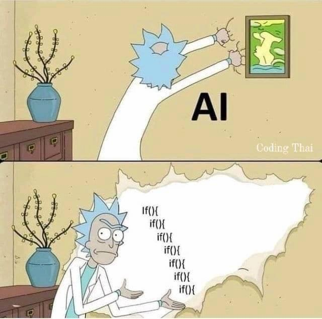
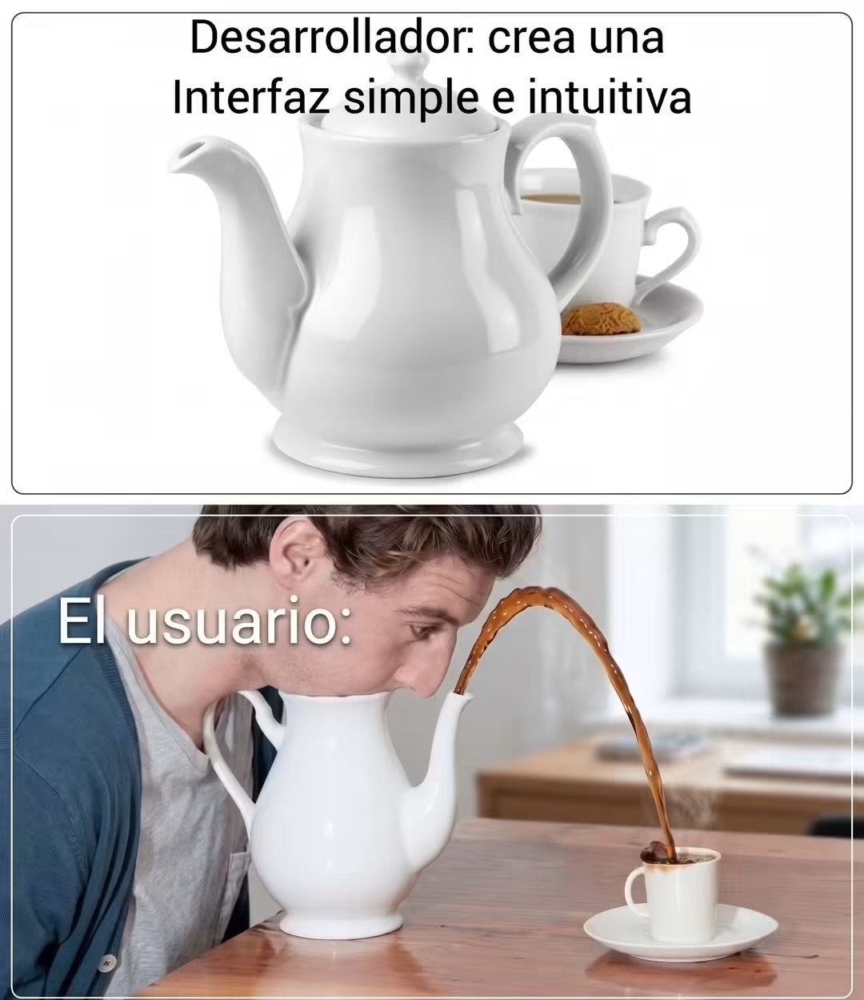
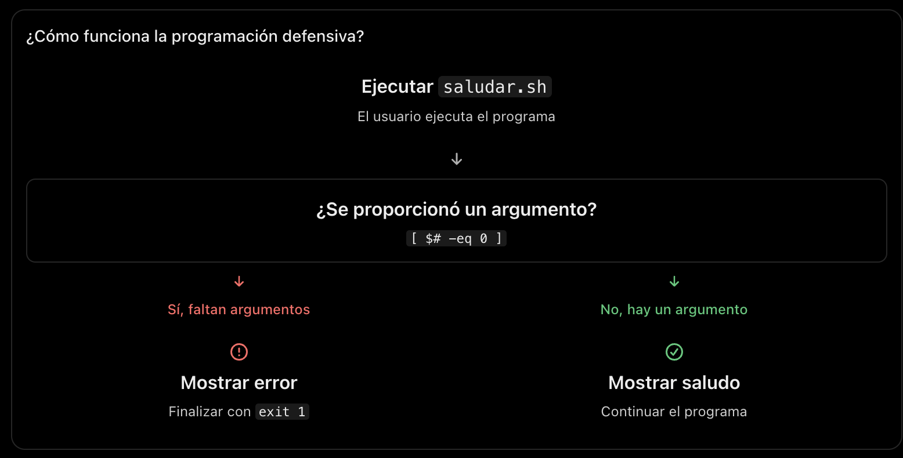

34 Condicionales
Fecha: 13 de octubre, 2026
Objetivos:
Comprender la lógica de condicionales → Identificar cuándo y cómo aplicar
if,elseyelifpara tomar decisiones en un script.Aplicar condicionales en scripts → Resolver problemas prácticos mediante condiciones (ej. verificar existencia de archivos, validar entradas).
Las condicionales son estructuras de programación que nos permiten tomar decisiones basadas en el resultado de una expresión. En otras palabras, nos permiten ejecutar diferentes bloques de código dependiendo de si una condición se cumple o no. Los condicionales son fundamentales para automatizar tareas y crear scripts fléxibles.
Estructura básica:
if [ condición ]; then
# Instrucciones si se cumple
fiLa sintáxis básica de un condicional simple en formato de una línea es:
if [ condición ]; then orden1; orden2; fide igual manera pero en bloque identado:
if [ condición ]; then orden1 orden2 fi
if [ condición ]; then
orden1
orden2
fi34.0.1 Ejemplo 1. Verificar si una persona es mayor de edad
- Corchetes sencillos
[ ]
edad=20
if [ "$edad" -ge 18 ]; then
echo "Eres mayor de edad"
fiEl operador -ge significa mayor o igual que.
2. Corchetes dobles [[ ]]
if [[ $edad -ge 18 ]]; then
echo "Mayor de edad"
fi3. Paréntesis dobles (( ))
if (( $edad >= 18 )); then
echo "Mayor de edad"
fi34.1 Tabla de operadores para condicionales en Bash
| Operación | [ ] y [[ ]] |
(( )) |
|---|---|---|
| Igual a | -eq |
== |
| Diferente de | -ne |
!= |
| Mayor que | -gt |
> |
| Menor que | -lt |
< |
| Mayor o igual | -ge |
>= |
| Menor o igual | -le |
<= |
34.1.1 Ejemplo 2. Verificar si un número es positivo
- Corchetes sencillos
[ ]
numero=10
if [ "$numero" -gt 0 ]; then
echo "El número es positivo"
fi34.2 Nivel básico: if y else
¿Qué sucede si la condición no se cumple?
Podemos utilizar else para indicar qué instrucciones ejecutar en caso contrario.
if [ condición ]; then
# Si es verdadera
else
# Si es falsa
fi34.2.1 Ejemplo 3. Determinar sí un estudiante aprobó
calificacion=7
if [ "$calificacion" -ge 6 ]; then
echo "Aprobado"
else
echo "Reprobado"
fi34.2.2 Ejemplo 4. Determinar si un número es par o impar
numero=8
if [ $((numero % 2)) -eq 0 ]; then
echo "El número es par"
else
echo "El número es impar"
fiAquí utilizamos dos conceptos:
$(( ... ))permite realizar operaciones aritméticas.%obtiene el residuo de una división.
Si el residuo al dividir entre 2 es cero, el número es par.
34.3 Nivel básico-intermedio: elif
Cuando necesitamos evaluar varias condiciones, utilizamos elif, que significa else if.
34.3.1 Ejemplo 5. Clasificar calificaciones
calificacion=8
if [ "$calificacion" -ge 9 ]; then
echo "Excelente"
elif [ "$calificacion" -ge 7 ]; then
echo "Bueno"
elif [ "$calificacion" -ge 6 ]; then
echo "Suficiente"
else
echo "Reprobado"
fiBash evalúa las condiciones de arriba hacia abajo y ejecuta únicamente el primer bloque cuya condición sea verdadera.
34.4 Nivel intermedio: condiciones con read
Hasta ahora hemos utilizado valores definidos dentro del script. Pero podemos pedir información directamente al usuario.
34.4.1 Ejemplo 6. Solicitar la edad
echo "¿Cuántos años tienes?"
read -r edad
if [ "$edad" -ge 18 ]; then
echo "Puedes ingresar"
else
echo "No puedes ingresar"
firead -r permite almacenar lo que escribe el usuario en una variable. En este ejemplo se supone que introduce un número entero válido.
34.4.2 Ejemplo 7. Comparar dos números
- Crea un script llamado
comparar_dos_numeros.shdentro de la carpetamatematicos - Copia el siguiente código
#!/bin/bash
echo "Ingresa el primer número:"
read -r a
echo "Ingresa el segundo número:"
read -r b
if [ "$a" -gt "$b" ]; then
echo "$a es mayor que $b"
elif [ "$a" -lt "$b" ]; then
echo "$b es mayor que $a"
else
echo "Los números son iguales"
fi- Ejecuta el script.
34.5 Nivel intermedio: condiciones con texto
También podemos comparar cadenas de caracteres.
| Operador | Significado |
|---|---|
= |
Las cadenas son iguales |
!= |
Las cadenas son diferentes |
-z |
La cadena está vacía |
-n |
La cadena no está vacía |
34.5.1 Ejemplo 8. Verificar una contraseña de ejemplo
- Crea un script llamado
contrasena.shdentro de la carpetamatematicos - Copia el siguiente código
#!/bin/bash
clave="bash123"
echo "Ingresa la contraseña:"
read -r respuesta
if [ "$respuesta" = "$clave" ]; then
echo "Acceso permitido"
else
echo "Acceso denegado"
fi- Ejecuta el script.
Este ejemplo es únicamente educativo; no es un sistema seguro de autenticación.
34.6 Nivel intermedio: operadores lógicos
Podemos combinar dos o más condiciones.
| Operador | Significado |
|---|---|
&& |
AND: ambas condiciones deben cumplirse |
\|\| |
OR: al menos una condición debe cumplirse |
! |
NOT: niega una condición |
34.6.1 Ejemplo 9. Verificar si una calificación está dentro del rango válido
Ejecutar en la terminal:
calificacion=8
if [ "$calificacion" -ge 0 ] && [ "$calificacion" -le 10 ]; then
echo "Calificación válida"
else
echo "Calificación inválida"
fi34.6.2 Ejemplo 10. Verificar si un número está fuera de un rango
numero=120
if [ "$numero" -lt 1 ] || [ "$numero" -gt 100 ]; then
echo "Fuera del rango"
else
echo "Dentro del rango"
fiEvaluemos las condiciones
| Condición | Evaluación | Resultado |
|---|---|---|
[ "$numero" -lt 1 ] |
¿120 es menor que 1? | Falso |
[ "$numero" -gt 100 ] |
¿120 es mayor que 100? | Verdadero |
34.7 Nivel intermedio: comprobar archivos
Los condicionales son especialmente útiles para automatizar tareas con archivos y directorios.
| Operador | Comprueba si… |
|---|---|
-f |
Existe un archivo regular |
-d |
Existe un directorio |
-e |
Existe una ruta |
-r |
Se puede leer |
-w |
Se puede escribir |
-x |
Se puede ejecutar |
34.7.1 Ejemplo 11. Verificar si existe un archivo
Mueve a
matematicos/ejercicios/Ejecuta lo siguiente:
archivo="datos.txt"
if [ -f "$archivo" ]; then
echo "El archivo existe"
else
echo "El archivo no existe"
fi34.7.2 Ejemplo 12. Crear un directorio si no existe
directorio="resultados"
if [ ! -d "$directorio" ]; then
mkdir "$directorio"
echo "Directorio creado"
else
echo "El directorio ya existe"
fi34.8 Nivel intermedio: case
Cuando necesitamos evaluar múltiples valores posibles de una misma variable, case puede resultar más sencillo que utilizar muchos elif.

34.8.1 Ejemplo 13. Menú de opciones
#!/bin/bash
echo "===== MENÚ PRINCIPAL ====="
echo "1. Mostrar fecha"
echo "2. Mostrar directorio actual"
echo "3. Mostrar usuario"
read -r -p "Selecciona una opción: " opcion
case "$opcion" in
1)
date
;;
2)
pwd
;;
3)
whoami
;;
*)
echo "Opción no válida"
;;
esacEste código evalúa el contenido de la variable opcion.
Valor de opcion |
Comando ejecutado | ¿Qué hace? |
|---|---|---|
1 |
date |
Muestra la fecha y hora actuales. |
2 |
pwd |
Muestra el directorio actual. |
3 |
whoami |
Muestra el usuario actual. |
| Cualquier otro | echo "Opción no válida" |
Muestra un mensaje de error. |
Por ejemplo, si opcion=2, Bash ejecutará únicamente pwd.
El símbolo * representa cualquier valor que no coincida con las opciones anteriores.
En Bash, read -r permite leer información ingresada por el usuario sin interpretar las barras invertidas (\) como caracteres especiales.
1. Diferencia entre read y read -r
| Comando | ¿Qué hace? |
|---|---|
read variable |
Lee una entrada, pero interpreta las barras invertidas (\). |
read -r variable |
Lee la entrada respetando las barras invertidas literalmente. |
34.9 ¿Qué es la programación defensiva?
La programación defensiva es una práctica que consiste en escribir programas capaces de anticipar, detectar y manejar posibles errores antes de que provoquen resultados inesperados.
En otras palabras:
No debemos asumir que el usuario siempre utilizará correctamente nuestro programa.

34.9.1 Ejemplo 14. saludar.sh
Sin programación defensiva
Crea un script que se llame saludar_sin_pd.sh
#!/bin/bash
nombre=$1
echo "¡Hola, $nombre!"Si ejecutamos:
./saludar_sin_pd.sh AnaObtenemos:
¡Hola, Ana!Pero ¿qué sucede si olvidamos proporcionar el nombre?
./saludar_sin_pd.shResultado:
¡Hola, !El programa no presenta un error de ejecución, pero su resultado no es el esperado.
Aplicando programación defensiva
El programa saluda a una persona utilizando el nombre que recibe como argumento. Sin embargo, antes de hacerlo, verifica que el usuario haya proporcionado al menos un argumento.
Crea un script que se llame saludar.sh
#!/bin/bash
if [ $# -eq 0 ]; then # if (( $# == 0 )); then
echo "Error: Debes proporcionar un nombre"
echo "Uso: ./saludar.sh <nombre>"
exit 1
fi
nombre=$1
echo "¡Hola, $nombre!"
Explicación línea por línea
| Código | Explicación |
|---|---|
#!/bin/bash |
Indica que el script se ejecutará con Bash. |
$# |
Número de argumentos proporcionados al script. |
[ $# -eq 0 ] |
Comprueba si el número de argumentos es igual a cero. |
then |
Inicia las instrucciones cuando la condición es verdadera. |
echo |
Muestra mensajes en la terminal. |
exit 1 |
Termina el script con un código de error. |
fi |
Finaliza el condicional if. |
nombre=$1 |
Guarda el primer argumento en la variable nombre. |
echo "¡Hola, $nombre!" |
Muestra el saludo personalizado. |
34.9.2 Principios de programación defensiva
| Principio | Aplicación en saludar.sh |
|---|---|
| Anticipar errores | El usuario podría olvidar escribir su nombre. |
| Validar entradas | $# comprueba cuántos argumentos se recibieron. |
| Mostrar mensajes claros | echo explica el error y cómo ejecutar el script. |
| Detener ejecuciones incorrectas | exit 1 evita continuar sin argumentos. |
| Continuar cuando todo es correcto | El programa muestra el saludo. |
34.9.3 Pregunta para reflexionar
Nuestro script ya comprueba si el usuario proporcionó un argumento, pero ¿qué sucede si ejecutamos lo siguiente?
./saludar.sh Ana Pedro MariaEl programa responde:
¡Hola, Ana!¿Es correcto? Depende de lo que esperamos que haga nuestro programa.
Si el objetivo es recibir exactamente un nombre, necesitamos agregar otra validación:
#!/bin/bash
if (( $# == 0 )); then
echo "Error: Debes proporcionar un nombre"
exit 1
elif (( $# > 1 )); then
echo "Error: Solo debes proporcionar un nombre"
exit 1
else
nombre=$1
echo "¡Hola, $nombre!"
fiAsí, el programa no solo comprueba que haya argumentos, sino también que se reciba la cantidad esperada.